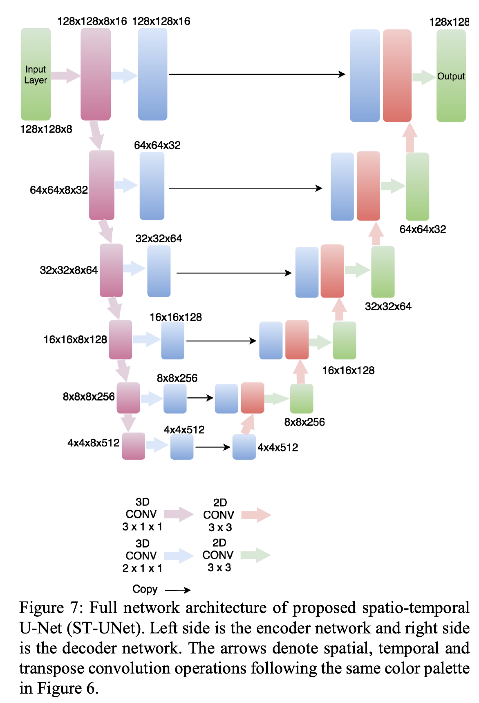
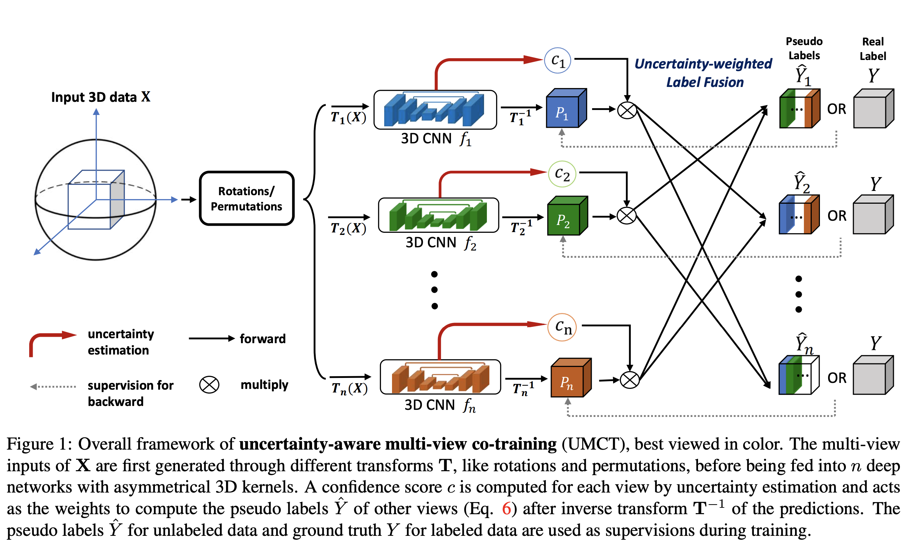
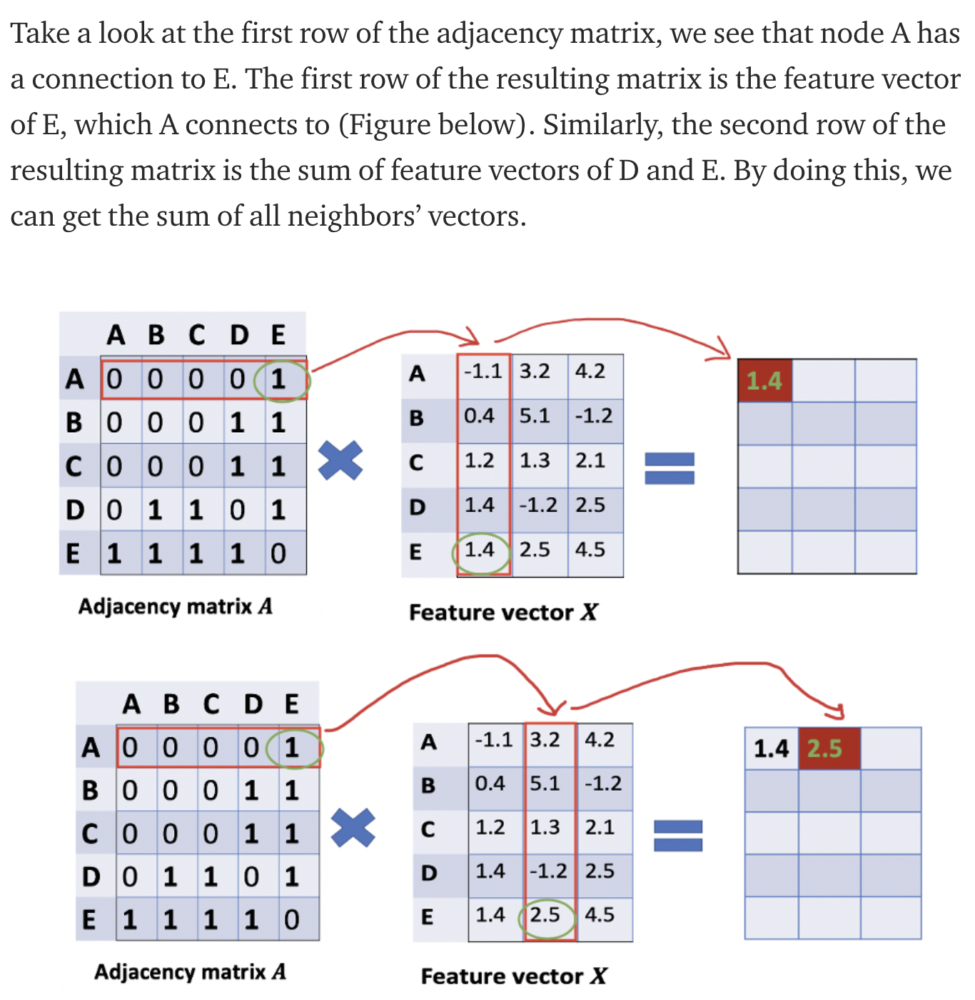
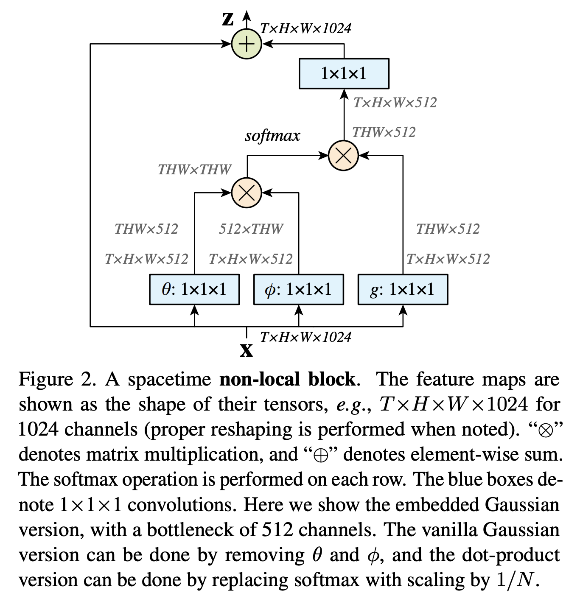
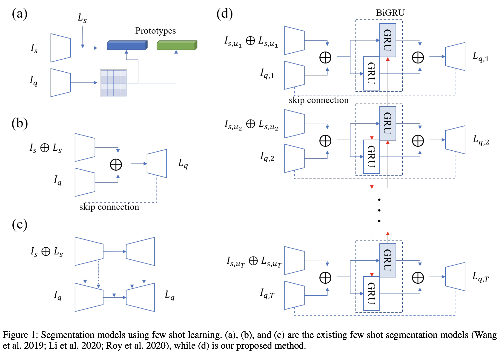
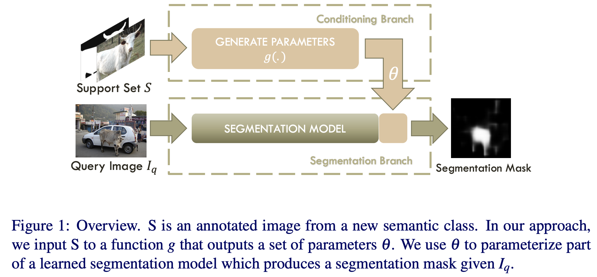
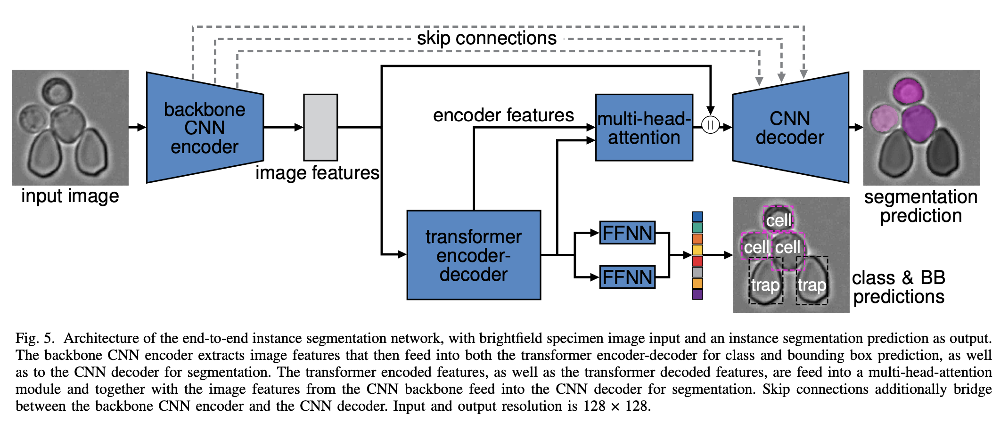
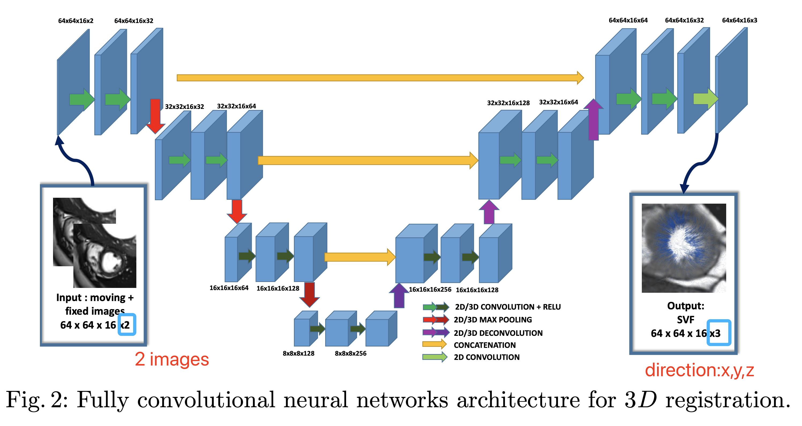

Nov, 2020
extensive/intensive Blur detection is the separation of blurred and clear regions of an image, which is an important and challenging task in computer vision. In this work, we regard blur detection as an image segmentation problem.
The MSDU-net uses a group of multi-scale feature extractors with dilated convolutions to extract texture information at different scales. The U-shape architecture of the MSDU-net fuses the different-scale texture features and generates a semantic feature which allows us to achieve better results on the blur detection task.comment The main novelty lies on applying methdos in another domain to preblems in current domain.
extensive
The overall structure is FCN+LSTM, and the two modules are combined sequencially. LSTM is mainly for contextual regularization: segmentation results from successive slices need to be constrained for shape consistence. Jaccard index loss: Segmentation-direct loss function can avoid the data balancing issue during CNN training between the positive pancreas and negative background regions.comment Citation = 76, very initial work of combining FCN and LSTM.
extensive/intensive
In this paper, we aim at solving pixel-wise binary problems, including salient object segmentation, skeleton extraction, and edge detection, by introducing a general architecture. In particular, we introduce a horizontal cascade of encoders so as to gradually advance the feature representations from the original CNN trunks. To better fuse feature at different levels, the inputs of each encoder in our architecture is densely connected to the outputs of its previous encoder. Stringing these encoders together allows us to effectively exploit features across different levels hierarchically to effectively address multiple pixel-wise binary regression tasks. Existing works: What they have in common is that each layer in the decoder (the right part of each diagram in Fig. 2) can only receive features from the backbone or its upper layers in the decoder. These types of designs may work well for salient object detection but may fail when applied to edge detection and skeleton extraction (and vice versa). The fundamental reason behind this is the fact that the feature representations formed in the decoders are not powerful enough to deal with all of these tasks.comment
This is NOT a multi-task framework, but one which can be used for only one of these tasks. Good writing. Nice related work, and detailed motivation.extensive
Exploiting long-range contextual information is key for pixel-wise prediction tasks such as semantic segmentation Our Dual Graph Convolutional Network (DGCNet) models the global context of the input feature by modelling two orthogonal graphs in a single framework. The first component models spatial relationships between pixels in the image, whilst the second models interdependencies along the channel dimensions of the network’s feature map. This is done efficiently by projecting the feature into a new, lower-dimensional space where all pairwise interactions can be modelled, before reprojecting into the original space. Code and models are made available to foster any further research (https://github.com/lxtGH/GALD-DGCNet). Current state-of-the-art methods are all based on deep learning using fully convolutional networks (FCNs) [32]. However, the receptive field of an FCN grows slowly (only linearly) with increasing depth in the network, and its limited receptive field is not able to capture longer-range relationships between pixels in an image. Dilated convolutions [4, 49] have been proposed to remedy this. However, the resulting feature representation is dominated by large objects in the image, and consequently, performance on small objects is poor. Another direction has been to fuse multiscale features within the network [17, 31, 55] or to use LSTMs to propagate information spatially [3, 40]. Recently, several methods based on self-attention [14, 24, 43, 50] have also been used to learn an affinity map at each spatial position that propagates information to its neighbours. However, the memory requirements of the large affinity matrix renders these methods unsuitable for high resolution imagery. GCNs have recently been applied to scene understanding tasks [8, 25, 26, 53], as they are able to globally propagate information through the whole image in a manner that is conditional on the input.comment This is a great work which needs more attentions.
extensive
Tubular structures are ubiquitous throughout the human body, with notable examples including blood vessels, pancreatic duct and urinary tract. They occur in specific environments at the boundary of liquids, solids or air and surrounding tissues, and play a prominent role in sustaining physiological functions of the human body. A tubular structure can be well represented by its skeleton and the cross-sectional radius of each skeleton point. we propose to perform tubular structure segmentation by training a multitask deep network to predict not only a segmentation mask for a tubular structure, but also a distance map, consisting of the distance transform value from each tubular structure voxel to the tubular structure surface, rather than a single skeleton/non-skeleton label We further quantize each dv into one of K bins by rounding dv to the nearest integer. We do this quantization, because training a deep network directly for regression is relatively unstable, since outliers, i.e., the commonly existed annotation errors for medical images [41], cause a large error term, which makes it difficult for the network to converge and leads to unstable predictions.
comment This idea may be also helpful for circle-like 2d-object segmentation.
Another thing is there are several threshold that are not explictly described in the paper.extensive/intensive
An alternative network architecture is to restrict the decoder and encoder to spatial domain while capturing a temporal signature in the encoding space, see Figure 2. Such an architecture can be accomplished as a combination of standard LSTM cells with spatial encoders and decoders which are commonly employed in semantic segmentation tasks such as DeConvNet [5] and SegNet [6]. With this architecture, temporal relations in the final high-level encoding space are captured by the recurrent structure. Such a network would cover use cases where the nature of temporal phenomena builds upon high abstractive concepts. However, in our use case, the shape of the plume is not semantically meaningful, has low abstraction, high texture and changes from frame to frame with no consistency across different exemplar plumes. This phenomenon suggests using a spatio-temporal encoder-decoder scheme as proposed in this paper which can capture and isolate lower-level patterns. For low levels. Recurrent NN is specially good at extracting high-level features. comment Design a special kind of 3D Unet that good at low-level features.
extensive
However, the CNN-based method often suffers from segmentation discontinuity for reasons such as noisy image quality and blurry pancreatic boundary. To inference initial segmentation, we first train a 2D CNN sub-network, then the successive CNN outputs are processed by another RNN sub-network,the successive CNN outputs are processed by another RNN sub-network.comment
Initial work of combination of Unet and RNN.extensive
Most approaches either only focus on 2D FCN or 3D FCN. A 2D FCN includes inplane information, and a 3D FCN exploits volumetric information. This paper performs NAS on an ensemble of a 2D FCN and a 3D FCN.comment
Searching space is enlarged.extensive
In our work, co-training is achieved by exploiting multi-viewpoint consistency of 3D data. We generate different views by rotating or permuting the 3D data and utilize asymmetrical 3D kernels to encourage diversified features in different sub-networks. In addition, we propose an uncertainty-weighted label fusion mechanism to estimate the reliability of each view’s prediction with Bayesian deep learning. As one view requires the supervision from other views in co-training, our self-adaptive approach computes a confidence score for the prediction of each unlabeled sample in order to assign a reliable pseudo label. Inspired by the success of co-training [5] and its extension into single 2D images [30], we further extend this idea into 3D. Typical co-training requires at least two views (i.e. sources) of data, either of which should be sufficient to train a classifier on. Co-training minimizes the disagreements by assigning pseudo labels between each other view on unlabeled data. For unlabeled data, we construct a co-training assumption under a semi-supervised setting. The co-training strategy assumes the prediction on each view should reach a consensus. So the prediction of each model can act as a pseudo label to supervise other views in order to learn from unlabeled data. Successful co-training: 1. Since most computer vision tasks have only one source of data, encouraging view differences is a crucial point for successful cotraining. 2. Another aspect of co-training to emphasize is view confidence estimation. In multi-view settings, given sufficient variance of each view, the quality of each prediction is not guaranteed and bad pseudo labels can be harmful if used in the training process. We further introduce the model-level view differences by adopting 2D pre-trained models to asymmetric kernels in 3D networks, such as 3 × 3 × 1 kernels. Another key component is the view confidence estimation. We propose to estimate the uncertainty of each view’s prediction with Bayesian deep networks by adding dropout into the architectures [13]. Asymmetric 3D kernels and 2D initialization. The cotraining assumption encourages models to make similar predictions on both S and U, which potentially can lead to collapsed neural networks mentioned in [30]. To address this problem, we further encourage view difference at feature level by designing a task-specific model. We propose to use asymmetric 3D models initialized with 2D pre-trained weights as the backbone network of each view to encourage diverse features for each view learning. comment Related work and experiment details are presented well.
extensive/intensive
This method is to increase robustness and performance of segmentation methods. This study combines automatic segmentation and assessment of segmentation uncertainty in CMRI to detect image regions containing local segmentation failures. Three state-of-the-art convolutional neural networks (CNN) were trained to automatically segment cardiac anatomical structures and obtain two measures of predictive uncertainty: entropy and a measure derived by MC-dropout. Thereafter, using the uncertainties another CNN was trained to detect local segmentation failures that potentially need correction by an expert.comment The quality of the paper is good and it needs more time to read the details.
extensive
Deep co-training has recently been proposed as an effective approach for image segmentation when annotated data is scarce. In this paper, we improve existing approaches for semisupervised segmentation with a self-paced and self-consistent cotraining method. To help distillate information from unlabeled images, we first design a self-paced learning strategy for cotraining that lets jointly-trained neural networks focus on easierto-segment regions first, and then gradually consider harder ones. This is achieved via an end-to-end differentiable loss in the form of a generalized Jensen Shannon Divergence (JSD). Moreover, to encourage predictions from different networks to be both consistent and confident, we enhance this generalized JSD loss with an uncertainty regularizer based on entropy. The robustness of individual models is further improved using a self-ensembling loss that enforces their prediction to be consistent across different training iterations. Existing methods do not employ a self-paced learning strategy and therefore are susceptible to incorrect predictions in initial stages of training. Existing methods do not exploit self-consistency within the model. While co-training promotes consistency across different models, it has also been shown that imposing consistency between the predictions of a single model at different training iterations can also improve its robustness in a semi-supervised setting [27]. Based on this idea, we propose to incorporate a self-ensembling strategy in our co-training method, where we replace each segmentation model f k by two models: a Teacher f1 and a Student model f2 . The two models share the same architecture, however the Teacher’s parameters are a temporal ensembling of the student’s across different trainingcomment .
extensive/intensive
Bayesian statistics offer a formalism to understand and quantify the uncertainty associated with deep neural networks predictions. The point estimate approach is relatively easy (with modern algorithms and software packages), but tends to lack explainability and might generalize in unforeseen and overconfident ways on out-of-training-distribution data points [27, 63]. This property, and inability of ANNs to answer “I don’t know" is problematic in fields where their predictions have critical implications, such as trading, autonomous driving or medical applications. Stochastic neural networks are a type of ANNs built by introducing stochastic components into the network (by giving the network stochastic activation: Fig. 3b or stochastic weights: Fig. 3c) to simulate multiple possible models θ with their associated probability distribution p(θ). They can, therefore, be considered as a special case of ensemble learning [99], where instead of training one single model, a set of models is trained and their predictions are aggregated.comment .
extensive/intensive
Tasks on Graphs: Node classification: Predict a type of a given node; Link prediction: Predict whether two nodes are linked; Community detection: Identify densely linked clusters of nodes; Network similarity: How similar are two (sub)networks.  The general idea of GCN: For each node, we get the feature information from all its neighbors and of course, the feature of itself. Assume we use the average() function. We will do the same for all the nodes. Finally, we feed these average values into a neural network. Instead of the sum() function, we need to take the average, or even better, the weighted average of neighbors’ feature vectors. Why don’t we use the sum() function? The reason is that when using the sum() function, high-degree nodes are likely to have huge v vectors, while low-degree nodes tend to get small aggregate vectors, which may later cause exploding or vanishing gradients (e.g., when using sigmoid). Besides, Neural networks seem to be sensitive to the scale of input data. Thus, we need to normalize these vectors to get rid of the potential issues. For matrix scaling, we usually multiply the matrix by a diagonal matrix. In this case, we want to take the average of the sum feature, or mathematically, to scale the sum vector matrix ÃX according to the node degrees. The gut feeling tells us that our diagonal matrix used to scale here is something related to the Degree matrix The number of layers is the farthest distance that node features can travel. For example, with 1 layer GCN, each node can only get the information from its neighbors. The gathering information process takes place independently, at the same time for all the nodes. We can stack more layers to make GCNs deeper. Consider residual connections for deep GCNs. Normally, we go for 2 or 3-layer GCN. GCNs are used for semi-supervised learning on the graph. GCNs use both node features and the structure for the training. The main idea of the GCN is to take the weighted average of all neighbors’ node features (including itself): Lower-degree nodes get larger weights. Then, we pass the resulting feature vectors through a neural network for training. Maths Note: When seeing a diagonal matrix, think of matrix scaling.comment GCN should have more applications.
extensive/intensive
Both convolutional and recurrent operations are building blocks that process one local neighborhood at a time. In this paper, we present non-local operations as a generic family of building blocks for capturing long-range dependencies. Inspired by the classical non-local means method [4] in computer vision, our non-local operation computes the response at a position as a weighted sum of the features at all positions. This building block can be plugged into many computer vision architectures. comment
extensive
Medical ultrasound imaging provides the inside structure of the human body with high-frequency sound waves which is safe, painless, noninvasive, non-ionized and real-time. Ultrasound imaging as compared to other imaging tools, such as Computed Tomography (CT) and Magnetic Resonance Imaging (MRI), is cheaper, portable and more prevalent. Several drawbacks such as the necessity of a skilled operator, the difficulty of distinguishing imaging structures between tissue and gas, and the limitation of the field of view bring more challenges on image processing algorithms study。 Deep-learning-based medical ultrasound image segmentation technology plays an essential and fundamental role in the analysis of biomedical images and significantly contributes to classification, recognition, visualization, 3D reconstruction and image-guided intervention, which can provide reliable guidance for doctors in clinical diagnosis. Potential Directions These approaches request high cost in labeling data. A lot of portable ultrasound hardware, thus lightweight. The heterogeneous appearance of the organ is one of the biggest challenges in ultrasound image segmentation. The pattern of ultrasound images can be different varies between the organ location, depth, neighboring tissues, hardness even the operators. Several non-machine learning approaches such as deformable models, watershed, region grow and graphbased methods are essential for general ultrasound image segmentation tasks. The study of deep learning can be potentially inspired by traditional methods, and the evaluation should be proved in general segmentation tasks. In clinical medical imaging, there are a number of multiple modalities methods such as MRI, X-ray, PET and CT. The medical imaging methods for diagnostic are adopted depending on different cases. Ultrasound image is regarded as the first-line method because of its low cost and non-radiation. MRI or CT is time consuming, costly but rich in texture. To solve the processing work for multi resources, cross-modal transfer learning can be a potential research direction. On the other hand, some small organ structures may be obscured by large human organs, so restoring obstructed lesions to reduce missed diagnosis is a challenge. Early prediction of diseases is the potential research direction in the future. The survival rate of patients will be greatly improved, if the diseases can be detected earlier, but all of these deep-learning-based models are trained on the datasets labeled by doctors, the features failed to be labeled by doctors can not be learned by the training models. To this end, training models with the labeled data and then expanding knowledge to make advance diagnosis prediction is of great significance in the future.comment .
extensive
In most experiments, the prior probabilities on hypotheses are not known. In this case, our recourse is the art of statistical inference: we either make up a prior (Bayesian) or do our best using only the likelihood (frequentist). The Bayesian school models uncertainty by a probability distribution over hypotheses. One’s ability to make inferences depends on one’s degree of confidence in the chosen prior, and the robustness of the findings to alternate prior distributions may be relevant and important. The frequentist school only uses conditional distributions of data given specific hypotheses. The presumption is that some hypothesis (parameter specifying the conditional distribution of the data) is true and that the observed data is sampled from that distribution. In particular, the frequentist approach does not depend on a subjective prior that may vary from one investigator to another. Frequentist measures like p-values and confidence intervals continue to dominate research, especially in the life sciences. However, in the current era of powerful computers and big data, Bayesian methods have undergone an enormous renaissance in fields like machine learning and genetics. There are now a number of large, ongoing clinical trials using Bayesian protocols, something that would have been hard to imagine a generation ago. While professional divisions remain, the consensus forming among top statisticians is that the most effective approaches to complex problems often draw on the best insights from both schools working in concert.comment .
extensive
We demonstrate that the ensemble agreement is highly correlated with the segmentation errors. The proposed network addresses the problem of low contrast by using multiple image modalities as inputs. We propose a novel architecture called SemiDenseNet, which connects all convolutional layers directly to the end of the network. This semidense architecture allows the efficient propagation of gradients during training, while limiting the number of trainable parameters. Our network requires one order of magnitude less parameters than popular medical image segmentation networks such as 3D U-Net. The resolution of the input image is recovered by adding deconvolution (or transpose convolution) layers at the end of the network. Unfortunately, this technique may still give coarse-looking segmentations. For instance, thin structures can disappear after pooling, and may not be recovered in the up-sampling path. To avoid this effect, the proposed FCNN architecture preserves resolution by avoiding down-sampling operations entirely. To evaluate the relationship between ensemble confidence and error, we separated confidence values in two groups using an agreement threshold of 60%: low confidence, where agreement among the ensemble’s CNNs equal to or less than 60% (no more than 6 CNNs agree), and high confidence, represented by agreement values greater than 60% (at least 7 CNNs agree).comment NA.
extensive
Functional images, such as PET, lack anatomical characterization, while can provide quantitative metabolic and functional information about diseases. MRI modality can provide complementary information due to its dependence on variable acquisition parameters, such as T1-weighted (T1), contrast-enhanced T1-weighted (T1c), T2-weighted (T2) and Fluid attenuation inversion recovery (Flair) images. T2 and Flair are suitable to detect the tumor with peritumoral edema, while T1 and T1c to detect the tumor core without peritumoral edema. Applying multi-modal images can reduce the information uncertainty and improve clinical diagnosis and segmentation accuracy. The earlier fusion is simple and most works use the fusion strategy to do the segmentation, it focuses on the subsequent complex segmentation network architecture designs, but it doesn’t consider the relationship between different modalities and doesn’t analyze how to fuse the different feature information to improve the segmentation performance. However, the later fusion pays more attention on the fusion problem, because each modality is employed as an input of one network which can learn complex and complementary feature information of each modality. In general, compared to the earlier fusion, the later fusion can achieve better segmentation performance if the fusion method is ffective enough. And the selection of fusion method depends on the specific problem. The isolated segmentation labels with small size are prone to artefacts and the largest volume are usually kept in the final segmentation. Input-level fusion network: By using the input-level fusion strategy, the rich feature information from different modalities can be fully exploited in all layers, from the first layer to the last one. This kind of fusion uses usually four techniques, multi-task segmentation, multi-view segmentation, multi-scale segmentation and GAN-based segmentation. Based on curriculum learning [58], which means gradually increasing the difficulty of training tasks, they applied an effective strategy to improve the convergence quality of the model by training the first task only until the loss curve tends to flatten, then the first data and the second data are concatenated along the batch dimension as the input for the second task. The operation of the third task is like the second one. In this way, not only the model parameters but also the training data are transferred from an easier task to a more difficult task. Qin et al. [43] proposed the autofocus convolutional layer to enhance the abilities of neural networks by using multi-scale processing. After integrating the multi-modal images in the input space, they applied an autofocus convolutional layer by using multiple convolutional layers with different dilation rates to change the size of the receptive field. Autofocus convolutional layer can indicate the importance of each scale when processing different locations of an image. Layer-level fusion: single or two modal images are used as the single input to train individual segmentation network, and then these learned individual feature representations will be fused in the layers of the network, finally the fused result will be fed to the decision layer to obtain the final segmentation result. in the layer-level fusion segmentation network, DenseNets are the commonly used networks which bring the three following benefits. First, direct connections between all layers help to improve the flow of information and gradients through the entire network, alleviating the problem of vanishing gradient. Second, short paths to all the feature maps in the architecture introduce implicit deep supervision. Third, dense connections have a regularizing effect, which reduces the risk of over-fitting on tasks with smaller training sets. Therefore, DenseNets allow to improved effectiveness and efficiency in the layer-level fusion segmentation network. The later fusion can achieve better performance, because each modality is employed as input of one network which can learn complex and complementary feature information compared to input-level fusion network. Publicly available multi-modal medical image datasets for segmentation task are rare, the most used dataset is the BraTS dataset having proposed since 2012. The authors demonstrate that more sophisticated data augmentation techniques, data post-processing techniques, or deeper network will not further improve the network performance, which means the network architecture plays a crucial role in the segmentation network than other data processing operations. Deep learning-based methods outperform in three aspects. First, deep learning-based networks learn a complex and abstract hierarchical feature representation for image data to overcome the difficulty of manual feature design. Second, deep learning-based networks can present the complex relationships between different modalities by using the hierarchical network layer, such as the layer-level fusion strategy. Third, the image transform and fusion strategy in the conventional fusion strategy can be jointly generated by training a deep learning model, in this way some potential deep learning network architectures can be investigated for designing an effective image fusion strategy. Therefore, the deep learning-based method has a great potential to produce better fusion results than conventional methods. Compared the last two fusion strategies, the layer fusion strategy seems better, since the dense connection among the layers can exploit more complex and complementary information to enhance the network training, while the decision-level fusion only learns the independent feature representation in single modality. Havaei, et al. [19] proposes a two-phase training procedure. It first constructs a patch dataset such that all labels are equiprobable by taking into account the diversity in all classes, and then retrains only the output layer to calibrate the output probabilities correctly. In this way, the class imbalance problem is overcome.comment .
extensive
In this study, we hypothesize that part of the reason for the incredible effectiveness of adversarial attacks is their ability to implicitly tap into and exploit the gradient flow of a deep neural network. This innate ability to exploit gradient flow makes defending against such attacks quite challenging. Motivated by this hypothesis we argue that if a deep neural network architecture can explicitly tap into its own gradient flow during the training, it can boost its defense capability significantly. Inspired by this fact, we introduce the concept of self-gradient networks, a novel deep neural network architecture designed to be more robust against adversarial perturbations. Gradient flow information is leveraged within self-gradient networks to achieve greater perturbation stability beyond what can be achieved in the standard training process.comment .
extensive
Few shot learning: to learn generalizable knowledge across several related tasks that can be used to predict the label of a query sample with support data and labels. Zero-Shot Learning: the target is to classify unseen classes without a single training example. Can you classify an object without ever seeing it? Yes, you can if you have adequate information about its appearance, properties, and functionality. Think back to how you came to understand the world as a kid. You could spot Mars in the night sky after reading about its color and where it would be that night One-shot learning: we only have a single example of each class.  However, most few shot methods that focus on natural 2D images are not directly applicable for 3D image based analysis since such models are prone to overfitting when trained with few observations. In this paper, we propose a novel few shot segmentation framework that models the relation between support and query data from other few shot tasks alongside 3D structural information between adjacent slices. We integrate a bidirectional gated recurrent unit (GRU) between the encoder and decoder of a 2D few shot segmentation model for efficient representation learning. In this way, encoded features of both the support set and adjacent slices capture key characteristics to predict the segmentation of a query image in the decoding layerscomment .
extensive
We train a network that, given a small set of annotated images, produces parameters for a Fully Convolutional Network (FCN). We use this FCN to perform dense pixel-level prediction on a test image for the new semantic class.  We take inspiration from few-shot learning and propose a novel two-branched approach to one-shot semantic image segmentation. The first branch takes the labeled image as input and produces a vector of parameters as output. The second branch takes these parameters as well as a new image as input and produces a segmentation mask of the image for the new class as output. This is illustrated in Figure 1. Unlike the fine tuning approach to one-shot learning, which may require many iterations of SGD to learn parameters for the segmentation network, the first branch of our network computes parameters in a single forward pass. This has several advantages: the single forward pass makes our method fast; our approach for one-shot learning is fully differentiable, allowing the branch to be jointly trained with the segmentation branch of our network; finally, the number of parameters θ is independent of the size of the image, so our method does not have problems in scaling.comment .
extensive
rning perspective and present PANet, a novel prototype alignment network to better utilize the information of the support set. Our PANet learns classspecific prototype representations from a few support images within an embedding space and then performs segmentation over the query images through matching each pixel to the learned prototypes.comment .
extensive
In this paper, we demonstrate that adding a single classification layer for semantic segmentation, fully-convolutional instance segmentation networks can achieve state-of-the-art panoptic segmentation quality. This is made possible by our novel dynamic rank-1 convolution (DR1Conv), a novel dynamic module that can efficiently merge high-level context information with low-level detailed features which is beneficial for both semantic and instance segmentation. Fully-convolutional instance segmentation models can predict high-resolution masks efficiently because the features are shared across all predictions。 Similarly in semantic segmentation, researchers have found that incorporating higher level context information is crucial for the performance. These closely related structures indicate that there is a possibility to unify the context module for semantic and instance segmentation.
comment .
extensive
Attention-based transformers are state-of-the-art in a range of deep learning fields. They have recently been proposed for segmentation tasks where they are beginning to outperforming other methods. We present a novel attention-based cell detection transformer (Cell-DETR) for direct end-to-end instance segmentation. While the segmentation performance is on par with a state-of-the-art instance segmentation method, Cell-DETR is simpler and faster. The transformer encoder determines the attention between image features. The transformer decoder predicts the attention regions for each of the N = 20 object queries. They are based on the DETR architecture [8]. comment .
extensive
Atlas selection and label fusion are two major challenges in multi-atlas segmentation. In this paper, we propose a novel deep fusion net for better solving these challenges. Deep fusion net is a deep architecture by concatenating a feature extraction subnet and a non-local patchbased label fusion (NL-PLF) subnet in a single network. This network is trained end-to-end for automatically learning deep features achieving optimal performance in a NL-PLF framework. Atlas selection and label fusion are two major steps in multi-atlas segmentation. Atlas selection is to select a few most relevant atlases for a target image, so as to raise computational efficiency or improve final segmentation accuracy. It relies on a ranking of atlases, and several similarity measures between atlas and target image have been proposed [4], [9]. Label fusion is to predict the target label by fusing the warped atlas labels, and a key problem is the accurate computation of fusion weights for atlas pixels or patches. Non-local patch-based label fusion (NL-PLF) approach [1, 2] has been the state of the art in MAS, which uses all the patches in a search region around a pixel of interest for label fusion. the idea of non-local patch-based label fusion scheme. For each pixel p in a target image T, all the atlas labels in non-local search window around p in the warped atlases {Xi}Ki=1 are fused to estimate the target pixel label. In deep fusion net, fusion weights are computed using the deep features extracted by the feature extraction subnet. Directly computing fusion weights using Eqn.(1) is fairly complex in gradient computation, because it is highly non-linear and depends on the pairwise feature distances in search windows. Hence, we decompose this complex operation into successive simple operations modeled as shift layer, distance layer and weight layer. Each operation and the gradient of its output w.r.t input can be efficiently computed using GPU in network training.comment .
extensive
In this paper, we propose an innovative approach for registration based on the deterministic prediction of the parameters from both images instead of the optimization of a energy criteria. The method relies on a fully convolutional network whose architecture consists of contracting layers to detect relevant features and a symmetric expanding path that matches them together and outputs the transformation parametrization From a database of N images In where the region of interests have been segmented, we consider the segmentations as surfaces Sn and we register these surfaces to a common template T (chosen as one of the segmented shape of our dataset) giving us a deformation ϕn mapping the template to each of the segmented shape. To do so, the framework of currents [5] provides an elegant mathematical method in order to treat the problem as true surface matching without the point correspondence issue. Each point pk of the template T can then be though as a landmark which is mapped with the deformation ϕn(pk) into each of the surface meshes Sn of our database. Then, for all pair of images (Ii, Ij) the pair (ϕi(pk), ϕj (pk)) defines a point correspondence. comment .
extensive
Ultrasound is the most commonly used imaging modality in clinical practice because it is a nonionizing, low-cost, and portable point-of- care imaging tool that provides real-time images. AI-Powered Detection, Segmentation, and Diagnosis in Ultrasound. Main application: Thyroid Nodule Detection and Classification, Thyroid nodules are extremely common lesions and are found in 50% of the adult population on the basis of autopsy studies Main application: Breast Lesion Detection and Classification, Breast cancer is the most frequent cancer among women and also the leading cause of cancer-related deaths among women. Main application: Liver Lesion Classification, Ultrasound is the preferred imaging modality to evaluate liver diseases because it provides information about the appearance of the liver and portal venous blood flow. Other applications: fetal ultrasound plane classification, stomach bubble and umbilical vein evalation, atherosclerotic plaque components (including lipid core, fibrous tissue, and calcified tissue) classification, spine-level vertebra identification, anatomic location and plane of abdominal ultrasound image classification。 Discussion and Outlook：AI-powered ultrasound is still far behind the progress in AI-powered CT and MRI because of high intra- and inter-reader variability in ultrasound image acquisition and interpretation. Discussion and Outlook：Most of the DL applications in ultrasound were trained and evaluated on limited, single data sets obtained from a single medical center and a single ultrasound device. To build trust in an AI system designed for disease prediction from medical images, we must build trans- parent models that explain how and what they predict. AI-powered ultrasound systems that evaluate multimodal data, guide sonographers, and pro- vide objective qualifications (eg, standard view of an or- gan and acceptable image quality), measurements, and diagnosis will not only assist with decision making but also improve ultrasound clinical workflow and reduce health care costs.comment .